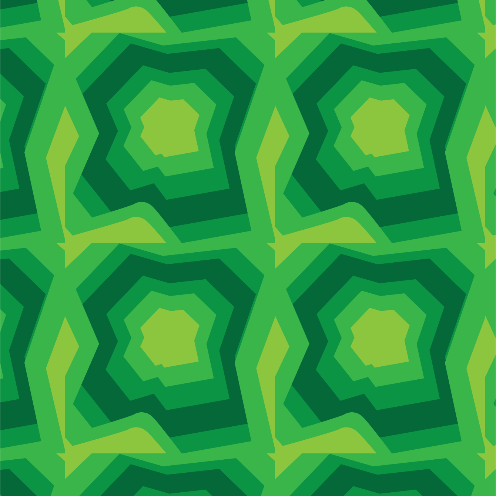
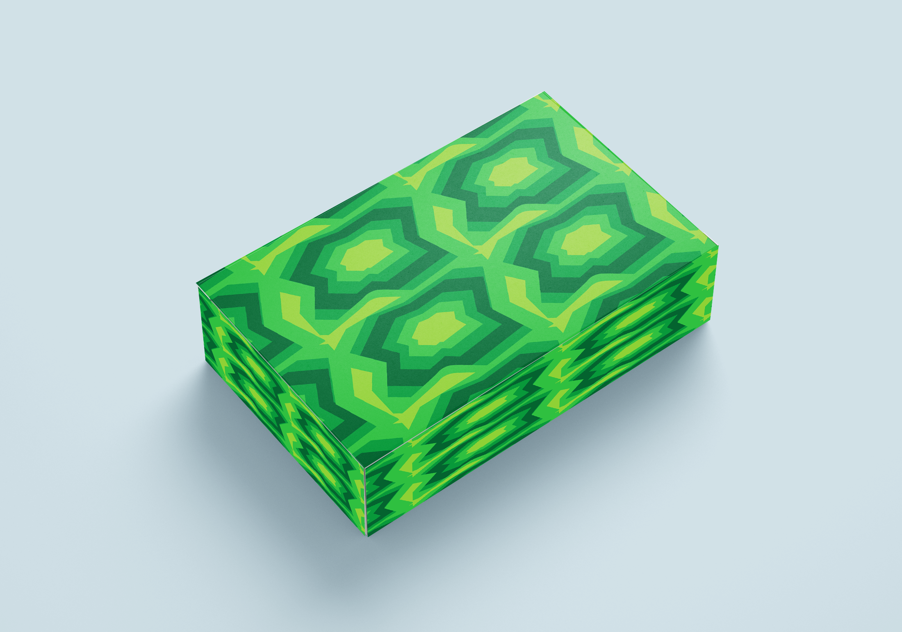
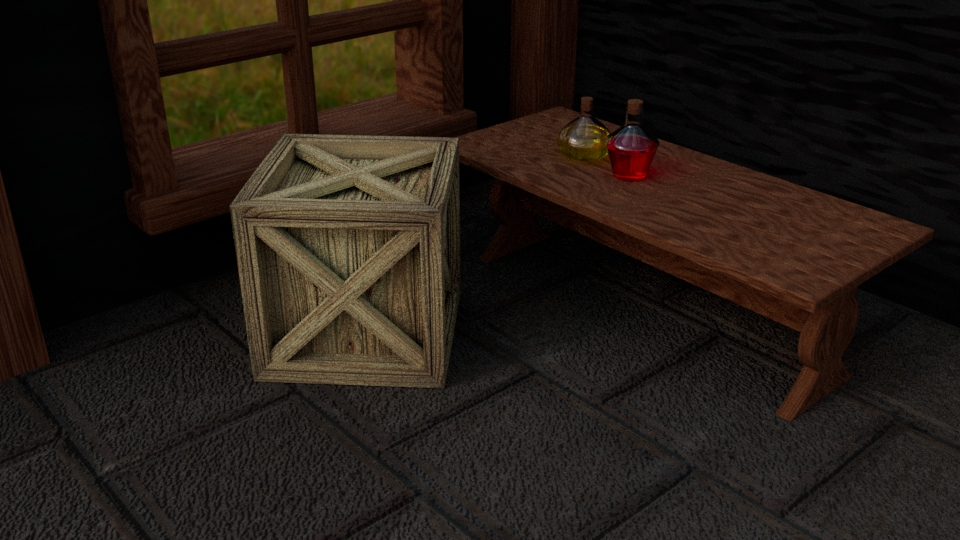
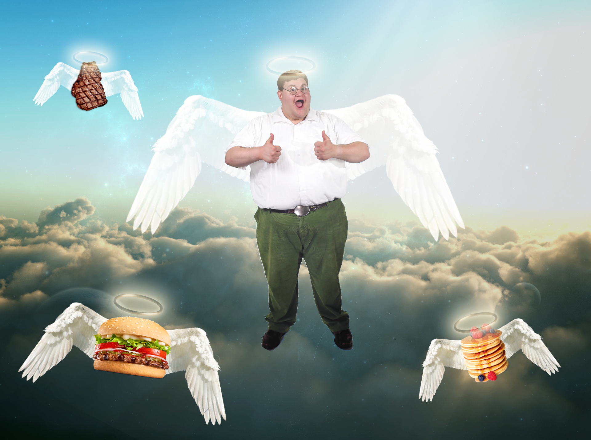
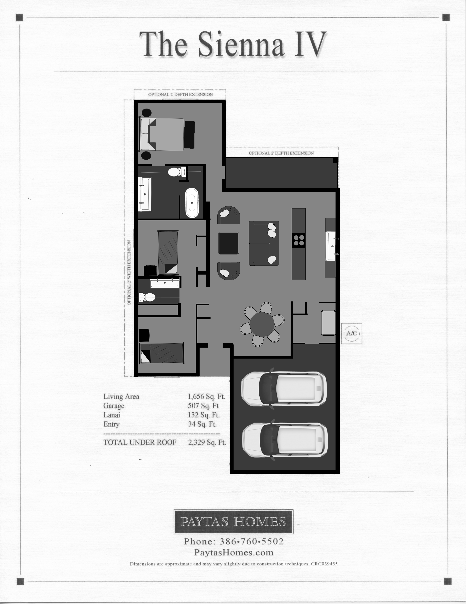

Software Engineer
LinkedIn: linkedin.com/in/peter-robar-a119a2289
GitHub: github.com/peterrobar
I am a seasoned professional with a strong background in User Interface Design (UI) and User Experience (UX) design. With a deep passion for crafting visually appealing and highly intuitive digital experiences, I have successfully conceptualized and executed numerous UI/UX projects that prioritize user satisfaction and engagement. In addition to my design skills, I possess a proficient command of Web Development, employing HTML, CSS, and JavaScript to bring my designs to life on the web. My ability to seamlessly blend design aesthetics with functional code ensures that the end product not only looks impressive but also functions flawlessly. Furthermore, my toolkit includes Adobe Photoshop and Illustrator, where I excel in creating stunning visual assets and graphics that elevate the overall user experience. I use these tools to craft eye-catching visuals, from icons and logos to custom illustrations, all of which contribute to a cohesive and visually appealing user interface. My holistic approach to design and development, coupled with my proficiency in CSS, JavaScript, and graphic design software, positions me as a versatile and highly effective professional in the field of UI/UX and web development. I am committed to delivering user-centric, pixel-perfect solutions that leave a lasting impact.
Associates in Video Game Design
Seminole State College
Graduated: N/A
Programming
Seminole State College
Spring Semester
Assignment: Create a Texture.
Assignment: Apply Texture to model.
Assigment: Create a Medieval Room.
Demonstration of my Photoshop skill.
Demonstration of my Architectural engineering.
